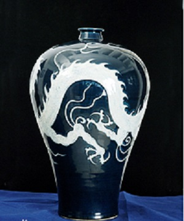

-

名称：蓝釉白龙纹梅瓶年代：元出产：中国元朝现存：扬州博物馆
- 基本信息
- 该件元蓝釉白龙纹梅瓶高43.5厘米，口径5.5厘米、最大腹径25.3厘米、底径14厘米。元蓝釉白龙纹梅瓶口小颈短，口沿平坦，肩丰渐滑，肩以下逐步收敛，至近底处微微外撇。瓶口和瓶身均不太圆，修胎不太讲究，有点随意性。器底浅，内凹为砂底，足底边角修刮随意。元蓝釉白龙纹梅瓶腹部刻划出一条龙追赶一颗火焰宝珠，其纹饰为俗称的赶珠龙纹。龙环绕瓶身一周，呈横“~”形，龙首上仰，似鹿角形双角微微后翘，龙眼突起，炯炯有神。其以蓝釉点缀眼珠，在青白釉的衬托下，更显突出，起到画龙点睛的艺术效果。龙张口吐舌，露出利齿。上、下颚唇边卷翘。颈部细长，有一束长鬣作飘拂状。背部脊纹动感鲜明。四肢粗壮且长，前肢一前一后屈伸，后肢一后一前伸屈，呈跨大步行进状。肘毛纤长而稀疏，亦作飘拂状。伸出的四肢，每肢三爪指尖十分锋利。其尾似蛇之秃尾。
- 文物详解
- 从整体上看，元蓝釉白龙纹梅瓶主体纹饰与辅助纹饰相映成趣，和谐统一。主纹是龙和一颗火焰宝珠，辅助纹是四朵火焰形云。火焰宝珠纹的时代特点是唐代火焰短，元代火焰长，而宋代火焰介于唐、元之间，不长不短。元蓝釉白龙纹梅瓶的火焰曲长呈波浪状，火焰的根部连有一颗小型宝珠，像浮动的珊瑚枝。满刻鳞片的龙身弯曲起伏，其动态与毛发的飘拂一致，神形兼备地展现了一条巨龙凌空腾飞，遨游于天际间。那矫健的身躯，飘拂的长发，坚硬的利齿，锋利的尖爪，尽显龙的威武、雄壮、猛然。在巨龙周边空间衬以四朵飘动的火焰形云纹，更加衬托出巨龙以其咤吒风云之势，腾飞于万里长空之中。
元蓝釉白龙纹梅瓶口沿内施蓝釉，器内无釉。器外壁通体施蓝釉，细看梅瓶上、下蓝釉略有不同，器身上部釉薄色淡泛紫，器身下部釉厚色浓泛深蓝色。整体釉质肥厚、莹润。胎釉交接处微露火石红。云龙纹施以淡淡的青白釉。蓝釉深沉古朴，青白釉清新纯洁。两种色釉的差异十分鲜明，白釉龙纹在蓝釉的衬托下更加夺目，两色相映，对比强烈。